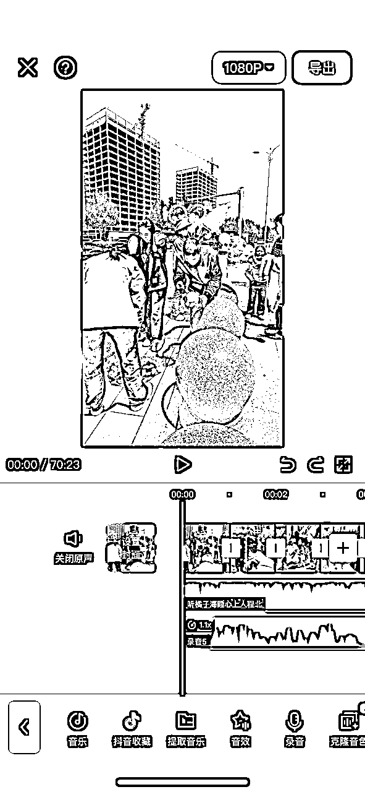
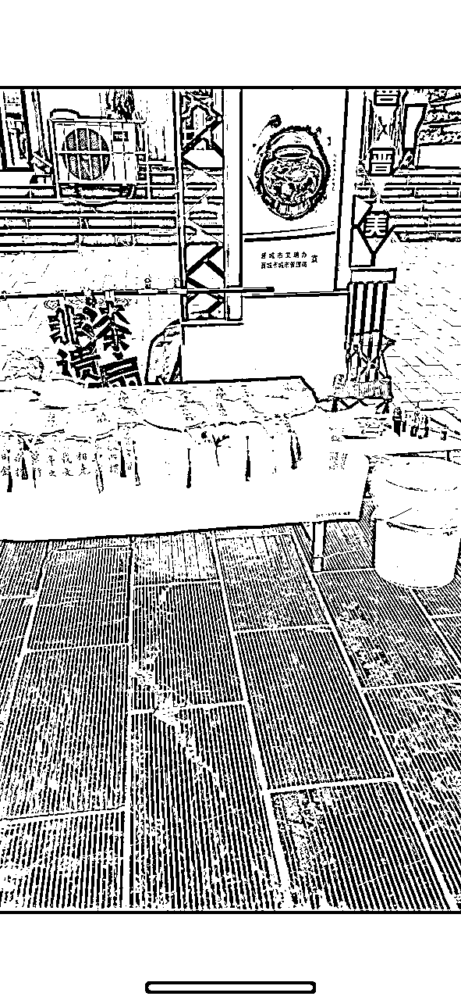
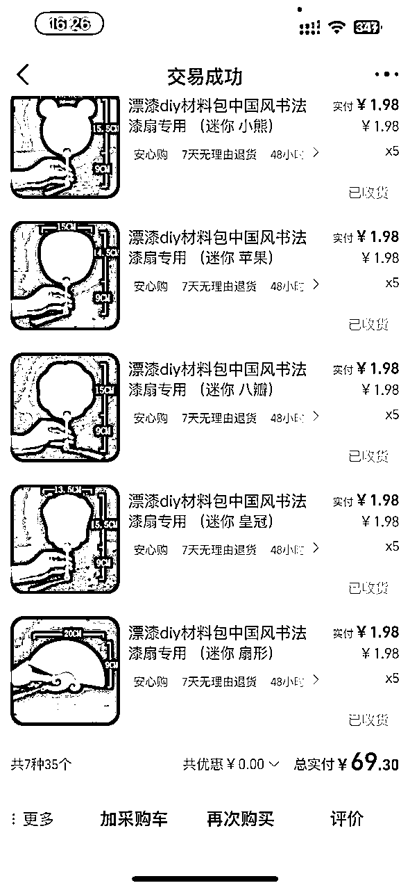
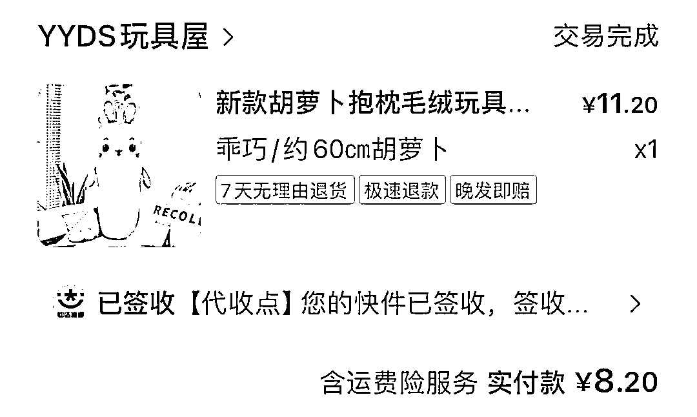
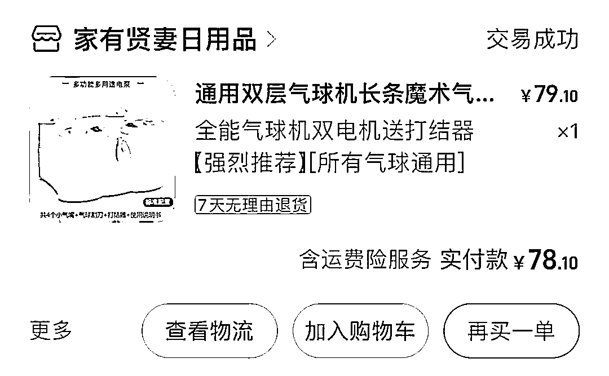

来源：https://ii2nqsn27p.feishu.cn/docx/NuoJdbVB4of8Qyx37awcz5e5nVf
前两天在生财的风向标里刷到了我自己。真的太惊喜了，非常感谢发现我的圈友。
我目前在做生意测评类账号，这种教人赚钱的视频类型，涨流量真的非常快。我的摆摊拉拉乐视频，抖音播放量已经100多万。
看到大家对生意测评比较感兴趣。今天就分享一下我做这类视频的详细制作流程，从工具购买，摆摊经验，到拍摄剪辑，账号运营，全部给大家讲清楚。
生财的圈友们，大家好！这是我第一次在社群里发帖，之前一直在潜水。先跟大家自我介绍一下。我叫成成，是抖音最早的一批本地生活博主。
在22年本地生活最火的那段时间，不夸张的说，在本地生活这个赛道里，我的账号流量是最好的。
直到现在很多本地生活类的账号还会用我以前的文案拍视频。如果是前几年做过本地生活的朋友，可能刷到过我的视频，之前的账号名字叫（成成/同城流量），现在名字改成了（成成/生意测评）。
那个时候专门讲本地生活的垂直账号不多，而我在我们本地。不仅做到了同城达人排行榜的第一名。还是我们当地最大的本地服务商股东之一，凭着对本地生活业务的了解，我的每一条视频，都能做到几十万，上百万的播放量。
如果是前两年早一点加入生财，我肯定会给大家分享一下我做本地生活的一些经验。但是在2024年，本地生活流量已经下降的几乎没有了。我的视频从原来的百万播放量到了连过万都很难。
做本地生活那段时间我不停的在各个城市中辗转。今年我回到了本地，开始思考本地生活流量下降之后，下一步的出路在哪里。
我一直非常看好商业类账号的变现能力，所以在今年，我毅然决然的把之前的本地生活垂直账号转型为了生意测评账号。每一条视频都是一个项目的测试。前期的几条视频我全部拍的是摆摊类的。因为我感觉摆摊视频非常容易起流量，事实证明这是对的，这几条摆摊视频，把我一年未更的账号又给盘活了。
第一条漆扇摆摊视频就跑了50多万的播放量。第二条摆摊拉拉乐的视频跑了100多万的播放量，两条视频私域引流了五百多人。
我不打算持续拍摆摊类型，想多拍一些实体项目和互联网项目类，做成一个招商能力比较强的账号，接各种优质的项目推广。目前我已经接了一个实体培训项目，过两天就要去拍摄了。后续这个账号的变现如何，我会持续的给大家分享的。
先给大家分享一下我的摆摊视频如何拍摄剪辑。
每一期视频我都会提前做好攻略。需要用到哪些材料？制作过程是什么样子的？把需要用到的材料全部买好，制作过程记好。
摆摊的前一天。我会提前把视频脚本写出来。我的脚本也写的比较简单。先写文案，然后每一句文案，脑子里想一想这一句文案要匹配什么样的画面，把想象中的画面写在文案后面。

这样的话，大概整个视频要拍摄一些什么画面，心里就有数了。整个拍摄的过程中经常看一下脚本，看看有没有画面漏拍了。一个视频至少要拍7~80个镜头，最后才比较好剪辑。手工气球那期，我就一共拍摄了190多个镜头，才剪成一个两分多钟的视频。

剪辑时我会先把所有素材都导入剪映。然后粗剪一遍，把每一段视频中可用的部分留下，不用的部分删掉，把时长缩短。
再按照文案的大概顺序排一下视频的顺序，视频的配音我是一句一句配的，先配音再剪辑画面，每配完一句声音，就剪辑对应的画面。

每一个画面的时长都在一到两秒左右，所以用到的画面也比较多，剪辑主要是靠自己日常的经验多一点。
正好我这里有我之前做团购视频所录制的拍摄剪辑教程，如果是零基础的拍摄剪辑小白可以保存观看。
【超级会员V6】通过百度网盘分享的文件：2.剪映基础教程....mov等3个文件
链接：https://pan.baidu.com/s/1l_wRIIda8VNst6iKQa_iQA?pwd=2A5V
提取码：2A5V
复制这段内容打开「百度网盘APP 即可获取」
先跟大家分享一下摆摊测评的这几期所用到的材料和经验，全部无广告，是我自用的分享。
简单的说，漆扇就是买好现成的空白扇子，在漂满漆的桶里下扇，让扇子自然上色的一个过程。

漆扇最简单的准备，就是扇子，漆，桶，水。
普通的纸扇，泡水会开裂，大家买扇子的时候买“漆扇专用扇”。
我是在1688买的扇子，买了两种规格，大扇子和小扇子。
这个是我在1688买扇子的店铺，无广，不做推荐，因为我做出来有一把扇子裂了，大家可以找找更好的货源，我买了几十把，用不完的退了，大家可以买二三十把试试水。


大扇子有带字和不带字的，大扇子推荐大家买带字的这种，不带字的空白扇子我没有卖出去，这种空白的大扇子我觉得只有自己会写书法的人，自己提字才会买。
当然，如果摊主会书法的话，可以给顾客定制提字，那销量肯定也不错。
我买的迷你小扇子的成本在1块98一张，常规的大扇子带字的3.58，不带字的2.38。
扇子定价，根据大家当地的消费水平来定，像我们这边小城市的价格在20~35左右，大城市的话可以再贵一点。迷你扇子可以定价低一点，带字的扇子定价高一点。
一般漆扇摆摊，会用到两种漆。
一种大漆，天然树脂涂料，是人工从漆树割取的天然漆树液，无毒无害。很多人说这种漆有致敏性，但是我用了没发现过敏，大家摆摊的时候如果怕顾客过敏，就让顾客制作的时候戴上手套，漆干了就没事了。
大漆比较贵，干的也比较慢，顾客偶尔会过敏，所以很多摊主现在会选择另一种腰果漆来做扇子，便宜，干的快。
但是腰果漆不是天然制成，肯定是会有点毒性的，大家也不用过于担心，在通风的地方做，戴上口罩就可以了。
漆扇最正宗的做法肯定是用大漆，但是摆摊主要是为了赚钱，选择价低的腰果漆也无可厚非，大家如果是用腰果漆来做，就不要把“非遗漆扇”作为招牌，因为非遗漆主要是用大漆，招牌就写“漂漆扇”就可以了。
不管是大漆还是腰果漆，都是需要用橘子油配的，我们买的时候买已经配好的，如果需要自己现场配的话，顾客多的时候很不方便。
买漆的时候，可以先买一套基础色。再买几个单独的颜色。顾客在漂漆扇的时候，常用青绿，松绿，粉色，蓝色，金色，奶白色，特别是青绿色，粉色，蓝色这三种颜色大家都会作为扇子的底色，所以会用的比较多。大家可以买大瓶。
关于漆能调多少扇子，也是不确定的。有的人下的多，有的人下的少。有的颜色用的很多，有的颜色用的很少。80ml的漆大概能做40把扇子，价格也在40左右。大漆成本大概是一张扇子一块。用腰果漆的话更便宜。
这是我买的大漆，量有点不够，大家买的话可以买多一点。
水桶我买的口径30厘米，高38厘米的，桶越大越费漆，30厘米桶下团扇，尺寸是刚刚好的，如果大家还想卖折扇，就买更大一点的桶，或者一个大盆，大缸，都可以用。
水桶里最好套一个袋子，漆粘在桶上特别难洗，袋子我买的尺寸65宽×75高。

如果摆摊附近有可以接水的地方，就把桶拿过去接水，没有的话，就从家里接好水再拿到摆摊的地方
上一位顾客用完的水，是不需要换的，用吸水纸把里面的漆吸出来就可以，但是，因为漆是，油+漆配好的，漆里面的油会让水越来越油，如果附近有能换水的地方，还是建议接待几位顾客之后，把水换一下。
桌子大家可以自己看着准备，我是拿的家里的折叠桌。
桌布我买的100×160的古风桌布，除了大漆我是在淘宝买，扇子我是在1688买，其他东西我都是在拼多多买的。
我还准备了毛笔和印章，我在摆摊的时候并没有用上。大家前期试水的时候也可以不用准备。
如果要用到这两样，毛笔字要在下水之前写好晾干，毛笔字干的是很快的。字干了之后再下水，漆扇漂好之后，用吸水纸吸干表面的水分，再盖章。
这里有一个大坑，大家一定要注意，买吸水纸的时候，买尺寸大一点的“果蔬吸水纸”就可以，但是一定要买表面平整的纸巾，如果是表面有印花的就可能把印花印在扇子上，把扇子破坏掉。
如果买回来的纸还是带有印花的。那就不要用吸水纸吸水了，直接出水之后。稍微甩一下水，晾一下就可以了。
还要准备一两根用来搅拌的棍子，滴了漆之后，用棍子稍微在水面上扒拉两下，扒拉出自己喜欢的纹路来，再入扇。
因为我买的纸不平整，就不分享链接了，大家可以找一下表面平整的吸水纸，或者直接用宣纸吸水。
7.垃圾袋，一次性手套，围裙，书签，电脑，招牌
因为要不停的用吸水纸来吸水里的漆。所以说产生的垃圾会很多。建议大家准备一个大一点的垃圾袋。漂扇的时候一定会弄脏手，所以一定要准备一盒一次性手套。再戴上围裙，防止弄脏衣服。
还可以准备一些空白书签，作为顾客买扇子的赠送。
摆摊到了晚上的时候可以拿出一个电脑。循环播放抖音的漆扇视频，可以让顾客了解我们是做什么的，也比较吸人眼球。播放视频的时候打开电脑版的抖音，搜索“漆扇”，点开视频播放。提前把抖音设置好自动连播就可以了。

1.滴漆，一定要先让顾客选好自己想用的颜色，因为大漆是干的很快的。如果下好了一个颜色，等半天再下另一个颜色的话，水里面的漆就干了不好上色了。
顾客选颜色的时候可以给他推荐几个颜色的搭配，我是写了几个颜色搭配的案例贴在桌子上。大家也可以借鉴一下。颜色不要选择的太多。颜色太多太杂，出来的扇子并不好看。我一般会让顾客选择三种颜色。
顾客选好颜色之后，如果可以的话，尽量让顾客自己操作，自己下扇子。这样的话，如果出来的效果顾客不满意，也不会有太大的纠纷。
滴漆之前一定要记得拿起漆的瓶子用力摇一摇。漆都是用油配好的，如果没有摇一摇的话它上面是一层油下面是漆，倒出来就会是一层油。
漆滴好之后，用一根棍子（拿筷子也行）。在水面上轻轻划动几下，划出自己想要的纹路，然后赶紧下扇子。不要特别大力的搅动，轻轻的划一下漆就可以。
这里还有一个点，如果滴了金色的漆，一定要把金漆划开，金色漆如果没有划开的话，特别容易成为一个黑点。
2，扇子下水
扇子下水的时候，手一定要稳，有三种常用的下水方式
第一种，旋转入水，这种最常用，我觉得出来的效果也最好。如果是带字的扇子，漂漆的时候注意避开字的部位。
办法是在入水时，扇子最前端先用力旋转一下，把周围的漆散开。
趁漆散到周围，中间没漆的时候，把带字的那部分迅速入水，再慢慢旋转出水。
中间的字就不会粘到漆了。
第二种，左右滑动入水，这样入水的扇子纹路有水波纹的感觉。
第三种，垂直入水，这样下水基本上就是水面的漆什么样子，印出来就是什么样子。
3.吸水
扇子出水后，拿吸水纸正反两面吸干水分，交给顾客。
但是这个时候扇子还没有完全干，告诉顾客先不要碰，回家之后倒置一夜晾干就可以用了。
还是注意吸水纸上不能有印痕，纸上有印痕，不要印在扇子上。
摆摊拉娃娃，就是把一堆娃娃全部绑在绳子上。十元抽一次，抽中哪个，就把哪个娃娃拿走。
大娃娃是用来引流用的。买十个左右就可以了。小娃娃买五六十个。再买四五十个盲盒就差不多可以摆摊了。
小娃娃成本在3~5块，大娃娃成本十元以下，盲盒成本一元左右。
小娃娃在1688或者拼多多上面搜“娃娃批发”就可以买到了。
大娃娃的话，大家可以平常在抖音直播间去找一下，有很多10块钱以下的便宜大娃娃，特别适合摆摊拉拉乐的时候用。

摆摊布
拉娃娃用的绳子
招牌
再准备一个小桌子，一个放绳子的纸筒就可以了。
花艺我也是初学，技艺不精，所以给大家准备了专业的花艺课，可以用百度网盘保存观看。
【超级会员V6】通过百度网盘分享的文件：
58.花艺插花教程（B系列）等2个文件
链接：https://pan.baidu.com/s/1647MExhafIjv_svHrrZOzg?pwd=VrY7
提取码：VrY7
复制这段内容打开「百度网盘APP 即可获取」
再跟大家分享一下我用的鲜花进货平台，花伍。
这里面进花品质还可以，其他小程序我还没用过，大家有其他好用的渠道也可以分享出来。
网购鲜花之后如何醒花，包花，在我的抖音视频里都有详细讲解，所以在这里跟大家分享一下我用的物料，无广，自用。
给圈友们分享一下花样手工气球的视频课程，我自己录制的，大家可以在百度网盘观看。
【超级会员V6】通过百度网盘分享的文件：气球课程成成
链接：https://pan.baidu.com/s/1LtdNX0iz3OCGghmQZN3qbQ?pwd=6693
提取码：6693
复制这段内容打开「百度网盘APP 即可获取」
（课程还没有更新完，只更新了手法部分，造型部分这周内更完)
花样气球物料总结：（无广，自用总结）
260气球（新手可以先买几包混色）
手动打气筒
电动打气筒

布基胶
点胶
可调温胶枪
气球腮红
油漆笔
灯串

（小公仔用一米灯，气球冰淇淋和波波球用两米灯）
气球杆
（小公仔用40厘米杆，气球冰淇淋和波波球用70厘米杆）
包装袋
(小兔子这种小公仔用28*40厘米袋，小女孩这种大点的公众用35*45厘米袋）
长条气球
一米灯串
40厘米杆
包装袋
五寸气球
长条气球
冰淇淋卡纸
雪梨纸
2米灯串
丝带半米
70厘米杆
20寸波波球
长条气球
2米灯串
70厘米杆
分享结束了，大家如果还有问题可以留言，希望以后可以和优秀的圈友们多多建联，大家一起生财有术。